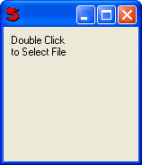
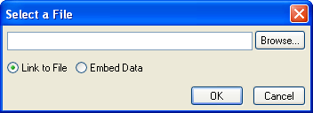

(filter = "", file = "", status = "", noembed = false)
Uses ImageControl to display an image. Double clicking (or right clicking and choosing Select) brings up a dialog allowing an image to be selected. The image can be saved either as a file name (linked) or as the actual image data (embedded). Embedded images must be less than 64k. Or a file can be dragged onto the control (which links them). If multiple files are dragged onto the control it Send's 'ImageDropFileList' with the list of files to its controller (e.g. AttachmentsControl) to handle.
Can also be used for other types of files (e.g. .txt, .pdf, .doc, .xls) in which case no image is displayed. If you view the file (by double clicking or right clicking) the standard Windows action for the extension is used. (e.g. Notepad for .txt)
"Image Files (*.bmp;*.gif;*.jpg;*.jpe;*.jpeg;*.ico;*.emf;*.wmf;*.tif;*.tiff;*.png;*.pdf;*.txt;*.doc;*.xls)\000*.bmp;*.gif;*.jpg;*.jpe;*.jpeg;*.ico;*.emf;*.wmf;*.tif;*.tiff;*.png;*.pdf;*.txt;*.doc;*.xls\000All Files (*.*)\000*.*\000"Methods:
For example:
OpenImageControl(xmin: 150, ymin: 150)
Would initially look like this:
Double clicking brings up the following dialog:
And after selecting an image:
See also: ImageFormat
Example:
Controller
{
Title: 'test'
Xmin: 620 // window width
Ymin: 240 // window height
New(dialogtip="choice second image") // pass parameters from external
{
// values set at runtime
.img2 = .Data.Vert.Form1.Img2 // control path
.img2.SetFilter("*.jpg\000*.jpg\000") // set image types filter
.img2.SetStatus(dialogtip) // dialog tip
// set OpenImage Img1 field value
.img2.Set('c:\\Tempfile\\test.jpg')
//
// with RecordControl it can be used the control name to manage
// controls
// otherwise shoul be used the control path,
// ex. .img2 = .Data.Vert.Form1.Img2
// Data in the default name of RecordControl
.Data.GetControl("Img1").SetStatus("choice the first image file")
.Data.GetControl("Img3").SetStatus("another image file to choose")
for field in Object("Fld1", "Fld2", "Fld3", "Fld4")
.Data.GetControl(field).SetVisible(false)
}
Controls:
(Record
(Vert
(Horz Fill (Static 'OPEN IMAGE' font:'Arial' size:14 ) Fill)
(Skip 10)
(Form name: 'Form1'
(Static 'only an initial path' group: 0 )
(Static 'complete \path\file name' group: 1 )
(Static 'filename' group: 2 ) (Static 'nothing' group: 3 ) nl
// set in file an initial image path
(OpenImage name: 'Img1', xmin: 150, ymin: 150,
file: 'c:\\Tempfile\\', noembed: true, group: 0 )
// set in file a path and image file name at run time
(OpenImage name: 'Img2', xmin: 150, ymin: 150, group: 1 )
// set in file an image file name in a wrong path
(OpenImage name: 'Img3', xmin: 150, ymin: 150,
file: 'test.jpg', group: 2 )
// set in file nothing
(OpenImage name: 'Img4', status: 'last image to choose',
noembed: true, xmin: 150, ymin: 150, group: 3 ) nl nl
(Field name: 'Fld1', readonly:true, width: 15, group: 0 )
(Field name: 'Fld2', readonly:true, width: 15, group: 1 )
(Field name: 'Fld3', readonly:true, width: 15, group: 2 )
(Field name: 'Fld4', readonly:true, width: 15, group: 3 )
)
)
)
setField(field, value)
{
.Data.GetControl(field).Set(value)
.Data.GetControl(field).SetVisible(true)
}
Record_NewValue(fieldsource,value)
{
// fieldsource is the name of the control that generate the new value
// value is the new value
// set the reference to the control by its control name
control = .Data.GetControl(fieldsource)
switch control.Name
{
case "Img1":
.setField("Fld1", value)
case "Img2":
{
.setField("Fld2", control.Get())
// retrieve value direct with the control path
Print(.img2.GetFilePath())
// retrieve value indirect with the control reference
Print(control.GetFileName())
}
case "Img3":
.setField("Fld3", value)
case "Img4":
.setField("Fld4", control.Get())
}
}
}
See also: OpenBrowseImageControl